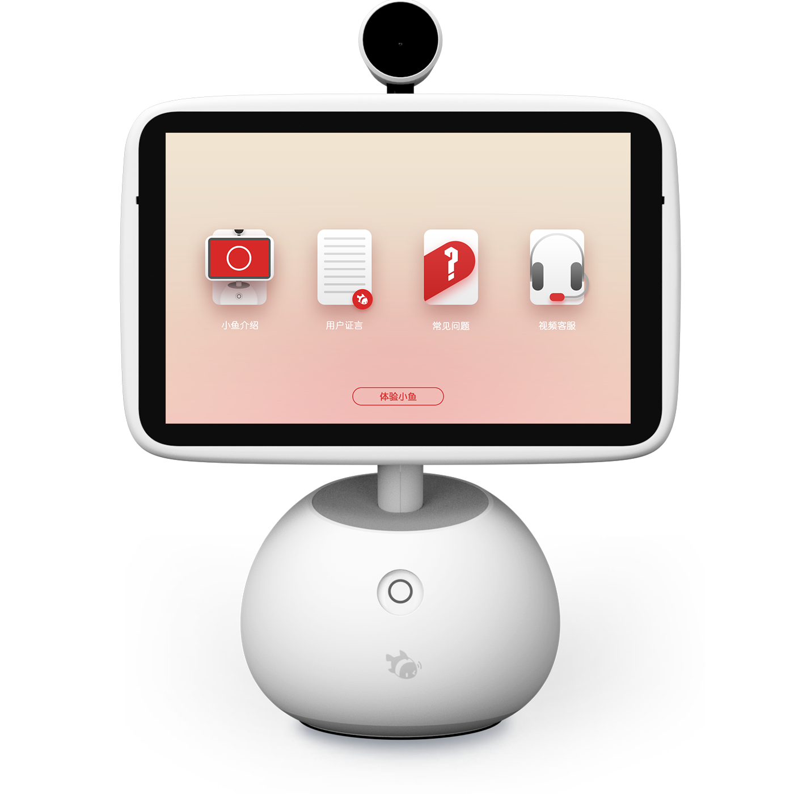
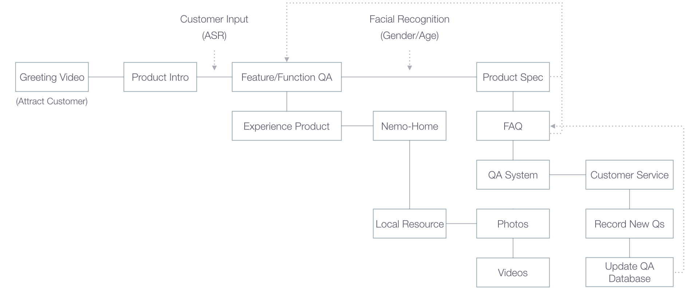

Ai-Nemo Retail Mode is an intelligent retail assisting system, including retail store product demonstration, back-end data collection, presentation and analysis. To ease the burden of manually introducing the product in the retail store, and tackle with the short-handed situation in most of retail stores, Retail Mode is able to detect passing-by customers, attract them using greeting video commercial, introduce product features through both proactive and reactive ways. Meanwhile, customers’ shopping behaviors as well as interaction data are collected for analyzing purpose and displayed on the data management platform.
Project Brief
Introduction to AiNemo Retail Mode 2.0
MY ROLE
As product manager, I actively participated in the research, design and development process of Retail Mode’s first version in August 2016 and led the project as project lead in the following versions. Up until Dec 2016, I led efforts to evolve the features and functions, and refined the design of the data management platform.
Insight & Ideation
- I did the research into the potential users of this service, including internal business and sales group, customer service team, product management team and external distribution channel managers. With the insights from research, I was responsible to initiate the project and come up with the service conceptual design.
Product Structuring & Design
- I envisioned targeted audience's demands and plotted these into product features. I designed interactive user experience flow for the front-end retail mode and planned the structure of data management platform. I led the design of the visual user interface and participated in the design execution.
Product & Project Management
- I planned and drove the project as the product design manager in charge. I collaborated with front-end developer, back-end developer, sales team, operation team, customer service group, and took the lead of Retail Mode design and development project throughout the product life span from the very beginning.
THE OBJECTIVES
Assist Front-line Sales + Data Collection and Management
- Demonstrate product’s feature, display product information, introduce the product to customer in traditional retail scenario
- Create more interaction in the product retail mode, ease the burden and difficulty of offline store salesmen’s oral presentation, let the product speak for itself
- Through utilizing ‘Nemo Eye’ video commercial, establish a first impression to customers that AI-Nemo has its intelligence and soul, hence distinguish AI-Nemo from ordinary tablets and smart camera, and intrigue customers to enquire more details
- Collect customers’ shopping behavior around Retail-Mode-Enabled AI-Nemo including head count of passing-by, stopover, and inquiry
- Record and analyze customers interactive data when they use Retail Mode to check on details about AI-Nemo, hence define customers’ pain point, features that interest them and factors that influence their purchase
- Monitor offline stores’ retail conditions including Wifi signal stability, product display location, customer traffic, sample machines' online time length, etc.
Front-end
Back-end
INTELLIGENT RETAIL ASSISTANT
The Front-end Interactive Sales Aid
- Carousel ‘Nemo Eye’ video commercial and intrigue customer to step nearer to the product
- When the camera detects the presence of customers, the screen will automatically turn towards the direction and begin to play the AI-Nemo self-introduction video commercial
- The video commercial is interact-able and will invite customer to input some information through audio, and these audio input combined with facial recognition will help determine which product features will be focused on in later product introduction
- After the video, customer will be able to select retail mode functional modules through the main menu and enquire product/company information through audio interaction
-

Interaction Process
INTERACTIVE FLOW
LOGIC FLOW CHART

INTERACTABLE VIDEO COMMERCIAL
DATA MANAGEMENT PLATFORM
The Back-end Data Presentation & Analysis Service
The back-end data management platform is built to support product managing team, sales group, customer service group and external supply chain management people. It is able to present real-time sample machines’ status (SN, online/offline, in retail-mode or not, demo times, etc), monitor each distribution channel’s accumulative demo times. Retail mode data analysis chart is also available, including retail mode activated times, retail mode full demonstration times, the records of how many times customers have interacted with each retail mode functional module. With authorization, a data management platform user is allowed to access to his/her sample machines’ data, add/delete sample machines, manage editable parameters, and enable/disable/update retail mode to designated sample machines.
DASHBOARD
Total number of sample machines / Number of sample machines online / Number of sample machines under demo
Demo times for each distribution channel / Number of sample machines under each distribution channel

BASIC INFO
Client / Store / SN / Current status / Online time length / Demo times / Wifi status / Retail mode volume
DATA ANALYSIS
Demo activate times / Full demo times / Times of entering Nemo-Home / Times of entering product intro / Times of video playing
Times of entering FAQ / Times of connecting video chat with customer service / Times of viewing promotion page
GEO MAPPING
Number of retail-mode-enabled sample machines in each province
SAMPLE MACHINE MANAGEMENT
Client / Location / SN / Nemo-Home version / Update time / Nemo number / Hardware version
Distribution channel / Authorization group / Retail mode enabled or not / Retail store info
DATA PLATFORM USER MANAGEMENT
Sample machine authorization group settings / Authorization group member settings